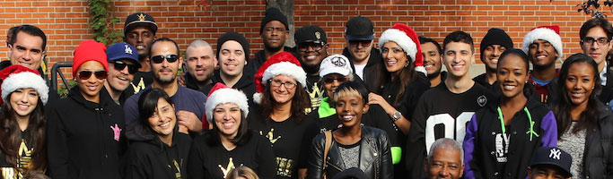

Our 2013 Annual Christmas Charity Event
The Worldstar Foundation team has been partnering with the generous residents of New York City for the last six years to give memorable holiday seasons to those who are unable to afford them on their own, both children and adults alike. The 2013 was no less special than the previous five events, as smiles could be seen all around while presents were passed out and opened by the eager people of Brooklyn.
Read more...